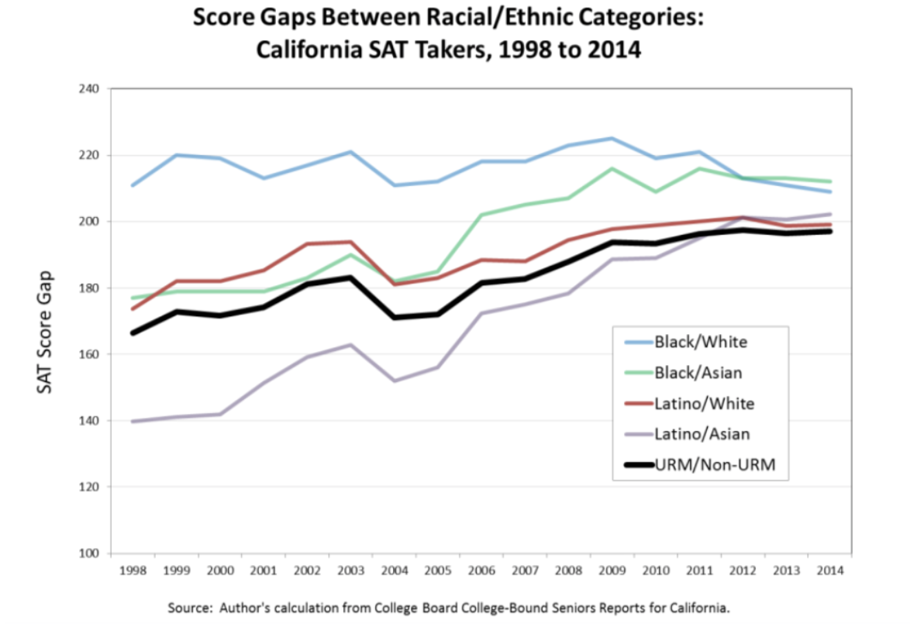
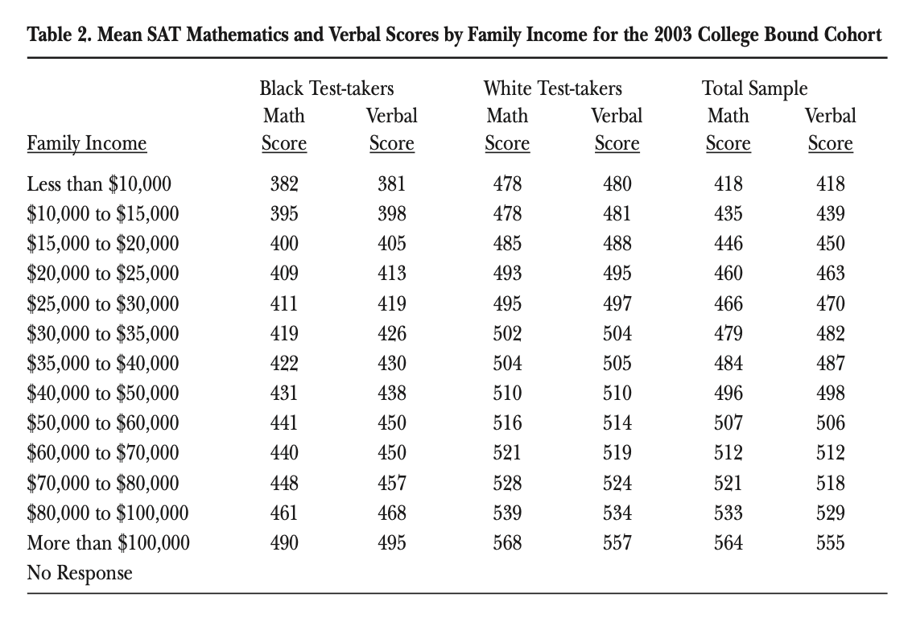
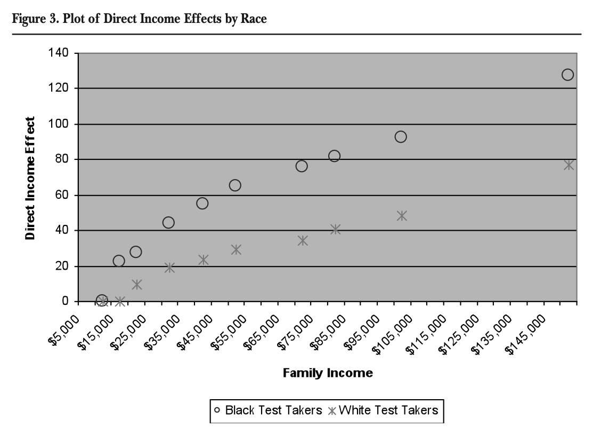
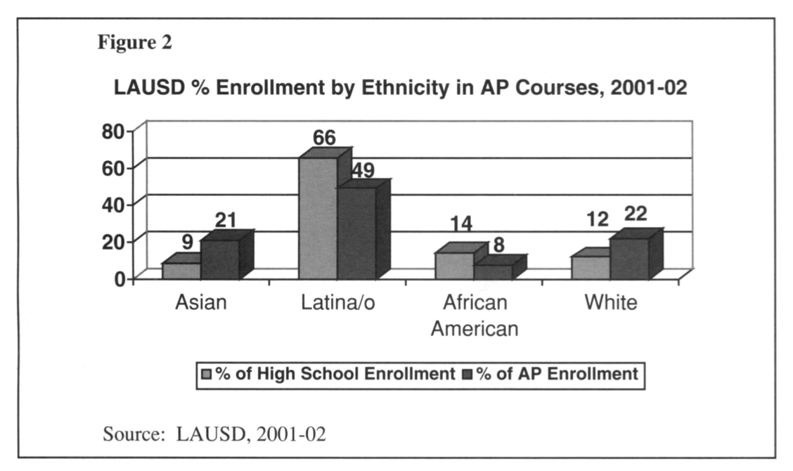
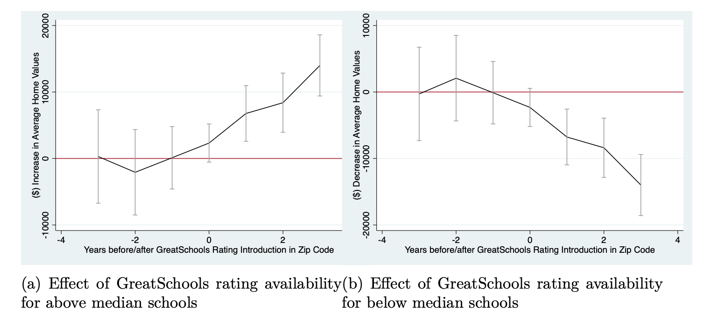

News about the world of education—in the palm of your hand
STANDARDIZED TESTING
The history behind standardized tests
Published April 6th, 2021 | Omar ElamriSource: University of Melbourne
Standardized testing is the one thing students across the United States have grown to hate. Each day seems to present a brand new test to take. Monday is the AP English exam, Tuesday is the PSAT, and Friday is SAT. What’s the difference between the PSAT and SAT? One is just for practice? Why isn’t just the SAT used? These are all questions that surely attest to the myriad amount of examinations students are required to take. Not only are standardized exams a pure annoyance—they’re also extremely racist. In this meritocratic-based society, it seems like an utter offense to suggest that our main system of determining the cream of the crop could possibly be discriminatory. It’s ingrained in our society to believe that working hard and trying one’s very best is the primary way to rise up the ranks. However rosy this belief is, it’s simply untrue. Standardized testing is racist and leads to a never-ending cycle of oppression. It’s rooted in white supremacy, it currently disfavors students of color, and it leads to oppressive effects in the future.
White supremacy was the motivator behind the creation of these exams in the first place. Carl Brigham was commissioned by the College Board in 1926 to create the Scholastic Aptitude Test. Previously, he created aptitude tests for the United States military. When writing about these tests, Brigham stated that “African-Americans were on the low end of the racial, ethnic, and/or cultural spectrum” and that testing would “[show] the superiority of ‘the Nordic race group’”. Clearly, the creator of these exams did not intend to make them fair—he made them to prove and uphold white supremacy. Brigham also went on to develop many of the Advanced Placement courses and exams. Of course, the current iteration of SAT exams and AP exams weren’t created to “show the superiority” of white people; however, “it still has explicit roots in classism, nativism, and white supremacy. This truth will never change, good intentions notwithstanding." Evidently, both the creator and the creation were, and still are, racist by definition.
In addition to being created to uphold institutions of white supremacy, colleges and other institutions explicitly used them to separate by ethnic origin. It was primarily believed that aptitude and ethnic origin were related. In the 1920s and 30s “scientists became obsessed with deviations and handicaps, both physical and intellectual.” These scientists used Charles Darwin’s ideology behind natural selection and applied it to eugenics-related ideology. Thus, the presumptive objectivity of standardized tests can be used to “scientifically” declare nonwhites as mentally inferior. College officials then took these ideas and used them to “limit the admissions of particularly undesirable ethnicities."" Unfortunately, both the origin of popular standardized tests such as the SAT and AP exams were designed with racist intentions—in addition to colleges and other institutions using them as a means to weed out minorities. Our current-day standardized tests have fraught and racist histories.
Sources:
Viera, Mariana. “The SAT Is a Reinforcement of America's Social Inequality.” Teen Vogue
Walker, John Rosales and Tim. “The Racist Beginnings of Standardized Testing.” NEA
STANDARDIZED TESTING
Studies show that standardized testing is detrimental to racial minorities
Published April 13th, 2021 | Omar ElamriSource: Vox News
While standardized tests did have fraught histories, it would be irresponsible to not mention how they disfavor students of color today. The first, and most obvious factor is that students of color frequently score lower on standardized tests than their white peers. A 2003 study by Dixon showed that for the college-bound cohort of that year, Black students on average scored 218 points less than White students.

Source: Geiser, Saul
The Dixon study expanded this to multiple years and received approximately the same result. Clear, empirical data is showing that standardized tests, specifically the SAT, yield a lower result for Black students. Other minority groups show a similar trend. In a study of score gaps between Black, Latino, and underrepresented minority groups compared to their White and Asian peers, all of them had at least a 140 point gap—only increasing as time went on.

Source: Dixon-Román, Ezekiel J., Howard T. Everson, and John J. McArdle.
Evidently, the SAT must be racist in some regard—why else would there be a clear, significant, and widening gap between minorities and White people? (Yes, Asian Americans also have a significant gap; however, this delves into the argument of Asian Americans being a "model minority"—in which that assumption is detrimental to everyone. This is its own very large topic—one that will be discussed in full as it extends over the scope of this article.) Of course, some might refute this argument—Black and Latino communities tend to be in areas with lower socioeconomic status. However, data also shows that this gap persists in each economic bracket. In the Dixon study, the researchers found that there is a significant gap between Black test-takers and White test-takers in the 2003 college-bound in terms of SAT scores. For both the Math and Verbal sections of the SAT, there is at least a 70 point gap between the two strata of test-takers. In addition, the Dixon study also shows that Black test-takers are more severely disadvantaged in terms of SAT score by a lower family income. This shows that the direct income effect on Black test takers is on average 2 times higher than on white test-takers.

Source: Dixon-Román, Ezekiel J., Howard T. Everson, and John J. McArdle. This race gap is much more extreme when put into comparison with high school GPA. According to the Geiser study which looked at LA Unified School District students in 2001, “the demographic footprint of the SAT is far more extreme.” Latino and Black applicants “comprised 60 percent” of the bottom 10% of SAT scores, but “only 39 percent of the lowest” 10% of GPA. More minority students score badly on the SAT whereas proportionally the GPA is representative of the population. This shows that a race-based gap is exclusive to the SAT and standardized tests—clearly making it racist.
Sources:
Dixon-Román, Ezekiel J., Howard T. Everson, and John J. McArdle. "Race, poverty and SAT scores: Modeling the influences of family income on black and white high school students’ SAT performance."
Geiser, Saul. "The growing correlation between race and SAT scores: new findings from California." (2015).
STANDARDIZED TESTING
Advanced Placement course and exam enrollment down among Black and Hispanic students
Published April 14th, 2021 | Omar ElamriSource: College Seekers
While my previous post talked about the difference in SAT examinations, it's also important to note that availability may also be an issue.

According to studies by Soloranzo and Klopfenstein, AP examinations are less available to racial minorities. In the 2001-02 school year, the LAUSD school district had 2x the amount of white students enrolled in AP classes versus Latine students in terms of percent enrollment. Black students in the LAUSD school district had similar numbers. While AP class enrollment isn't necessarily indicative of AP exam enrollment, Soloranzo bridges this gap by showing that 90% of AP course takers also take the AP exam—showing there is some overlap. Not only is this true in LA, but also in Texas. In a Texas school district in 1999, 15% of white students took AP exams whereas 8% of Latine students and 7% of Black students took them. In other words, White students are 2 times more likely to take AP courses and examinations. Clearly, AP exams (which are vital to college admissions and credit) are less available to students of color.
Sources:
Klopfenstein, Kristin. "Advanced Placement: Do minorities have equal opportunity?."
Solorzano, Daniel G., and Armida Ornelas. “A Critical Race Analysis of Latina/o and African American Advanced Placement Enrollment in Public High Schools.”
STANDARDIZED TESTING
What about the GRE?
Published April 20th, 2021 | Omar ElamriSource: GRE Ltd.
There is a key missing part of this series on standardized tests: international students and the GRE. When applying to graduate schools in the United States, students—domestically and internationally—take the GRE as a graduate school entrance exam. The exam is divided into multiple parts—math/reasoning and English comprehension—similar to the SAT/ACT. Anecdotal evidence (what I’ve heard) suggests that international students appreciate the use of the GRE since it provides them with the ability to showcase their ability without an American undergraduate diploma. However, academic studies beg to differ. The use and utility of this exam have been brought into question in recent years. According to a study by Emily and Davison Mupinga, international students seem to have difficulty with the GRE due to seemingly unfair references. An international student from Louisiana State University says that the context of the exam was difficult to determine. A common question on the GRE makes the use of analogies: "Pitcher is to baseball as--is to football." It was difficult for this student to make sense of this question since they “have never been exposed to the game [... they] would probably think about "soccer" because "football" refers to "soccer" to [them].” As the GRE caters to international students as well, clearly it should update its English exam to be more agnostic towards American contexts. In addition, this standardized test isn’t even very accurate for its intended purpose—predicting college success. A study by Joel Wao (et. al.) shows that the “the hypothesis of higher GPAs associated with higher GRE scores was weakly supported”—meaning that GRE scores don’t correlate with GPA/success at all. This study is corroborated by testing across a plethora of nationalities.
It’s clear that the GRE falls into the same pitfalls as other standardized exams. Disadvantages students who aren’t American (racism?) and fails to do what its intended purpose is.
Sources:
Mupinga, Emily E., and Davison M. Mupinga. "Perceptions of international students toward GRE." College Student Journal 39.2 (2005): 402-409.Walker, John Rosales and Tim. “The Racist Beginnings of Standardized Testing.” NEA
Wao, Joel, et al. "Investigating the predictive ability of admission GRE scores on graduation GPA scores of domestic and international students in construction management graduate school programs." 51st ASC Annual International Conference Proceedings. 2015.
STANDARDIZED TESTING
Does Standardized Testing Affect Areas Other Than Academia?
Published April 20th, 2021 | Omar ElamriSource: Multi Family Executive
Standardized testing being racist on its own wouldn’t really be a big deal. However, standardized tests bring merit, affect college admissions, affect housing prices, and other miscellaneous effects. Firstly, in terms of merit and college admissions, standardized is a big deal. On average, and backed up from data shown previously, students of color score lower on college admissions tests. Therefore, according to Fair Test, “many capable youth are denied entrance or access to so-called “merit” scholarships” which contributes to the “huge racial gap in college enrollments and completion”. Merit scholarships can increase the racial segregation of colleges. In the study by Heller, a Georgia merit scholarship program named HOPE was studied. As it uses standardized tests, placement in the program is determined by how well students do on it. They found that “by making it more difficult to gain entry at the states’ best schools, HOPE may be exacerbating the racial stratification of Georgia colleges and universities”. While there has been a huge push to increase equality among the races for college admissions—standardized testing has been actively reducing that push.
Somewhat shockingly, racist standardized tests have an effect on housing prices. (Yes! Housing prices!) This disparity among housing prices can increase segregation in our nation’s housing markets. As standardized tests are becoming increasingly a way for schools to promote themselves, websites such as GreatSchools advertise this data. Real estate markets use data to gauge prices—better quality schools around a neighborhood should increase the property value. As students of color do poorly on standardized tests compared to their white counterparts, indirectly, their housing prices do too—which is really messed up.

Source: Hasan, Sharique, and Anuj Kumar
It’s shown that a positive GreatSchools rating (from standardized exams) increases a property value—whereas a negative GreatSchools rating decreases property value. According to Hasan, “affluent and more educated families were better positioned to leverage this new information to capture educational opportunities in communities with the best schools” in which “an unintended consequence of better information was less, rather than more, equity in education”. Clearly, racist standardized testing has far-reaching effects—even on the nation’s housing market.
There are also other miscellaneous effects to the broken standardized testing system. According to Fair Test, English language learners face a disadvantage as “the tests are often inaccurate for ELLs.” This leads to “misplacement or retention”—making them “least likely to pass graduation tests.” In addition, standardized tests cause “African-Americans, especially males, are disproportionately placed or misplaced in special education. It’s become increasingly clear that these standardized tests aren’t just numbers—they have far-reaching implications that affect students of color now and far into the future.
Sources:
Hasan, Sharique, and Anuj Kumar. "Digitization and divergence: Online school ratings and segregation in America." Available at SSRN 3265316 (2019).
Heller, Donald E., and Patricia Marin. "Who Should We Help? The Negative Social Consequences of Merit Scholarships." (2002).
Walker, John Rosales and Tim. “The Racist Beginnings of Standardized Testing.” NEA, www.nea.org/advocating-for-change/new-from-nea/racist-beginnings-standardized-testing.
 Source: University of Melbourne
Source: University of Melbourne